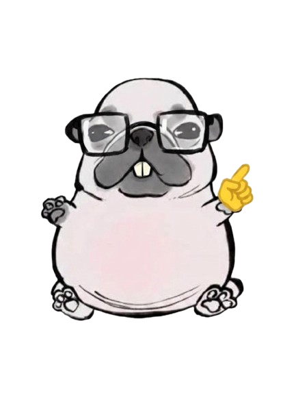

.png)
Impactos de los desastres volcánicos en la población
La ceniza volcánica es un material particulado fino con componentes como sílice cristalina, metales pesados y gases, que actúan como irritantes y abrasivos. Su dispersión en el entorno no solo afecta directamente la salud de las personas, sino que acidifica suelos, daña la vegetación y contamina acuíferos, reduciendo drásticamente la biodiversidad y la capacidad de recarga hídrica del territorio.
Según las guías internacionales, los efectos agudos más comunes de la exposición directa se manifiestan a nivel respiratorio, ocular y dérmico. En personas con condiciones preexistentes, se registra un aumento inmediato de las hospitalizaciones por sintomatologías graves.
| ¿SABÍAS QUE? | |
|---|---|
|
 |
Un estudio reciente de Etchegaray-Morales (2024) en la Revista Médica del IMSS confirma los patrones lesivos en erupciones modernas y añade que también pueden aparecer alteraciones en tejidos profundos. |
| Tipo de afectación | Efectos clínicos y diagnósticos |
|---|---|
| Respiratorias | Irritación nasal/garganta, tos seca, exacerbación de asma, bronquitis crónica, disnea y sibilancias. Exposición prolongada puede provocar silicosis. |
| Oculares y dérmicas | Conjuntivitis, sensación de arenilla, lagrimeo, abrasiones corneales; dermatitis irritativa y enrojecimiento al mezclarse con sudor en pieles sensibles. |
Los desastres volcánicos provocan estrés crónico derivado de la incertidumbre económica, la pérdida de medios de vida y la disrupción de las redes sociales tradicionales:
"Los riesgos modernos ya no son naturales puros, sino globalizados y manufacturados por la modernidad. Los modelos probabilísticos calculan lo incierto otorgando una ilusión de control, pero sin eliminar la vulnerabilidad ontológica."
Esta premisa define el concepto de la "Sociedad del Riesgo" propuesto por el sociólogo alemán Ulrich Beck en su célebre obra publicada entre 1986 y 1998.
Con el fin de estimar cuántas personas pueden verse afectadas por una amenaza volcánica, se emplean modelos matemáticos basados en aproximaciones probabilísticas y variables dinámicas:
Rp = (Pe × D × Pr) × U
Donde Rp es el Riesgo Poblacional Estimado; Pe es la Población Expuesta; D representa el Factor de Dispersión de la amenaza; Pr es la Probabilidad de Ocurrencia y U el Factor de Incertidumbre. La ética contemporánea nos recuerda que estos cálculos no deben ocultar nuestra condición humana fundamental, obligándonos a una humildad ecológica y resiliencia cultural.